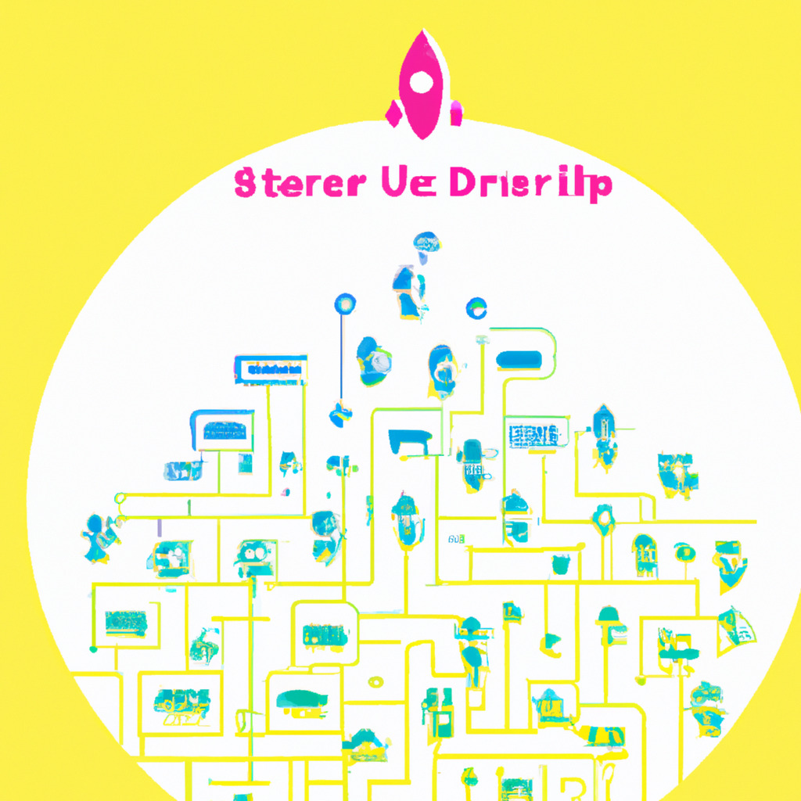

Imagine a startup that creates startups. Now, imagine that the startups created by this original startup also create startups. This chain of startup creation continues ad infinitum, making up what we'll call "recursive startups." Recursive startups are a groundbreaking concept in the world of entrepreneurship, pushing the limits of conventional business models.
Recursive startups challenge the traditional approach to business growth, as they continuously generate new companies with unique ideas and business models. In this article, we will delve into the concept of recursive startups, exploring how they work, their potential benefits, and the challenges they face.
At the core of the recursive startup concept is the idea of continuous innovation. The initial startup (known as the "parent" startup) is responsible for creating the first set of startups (the "children"). Each child startup is then tasked with generating its own set of startups, and this process repeats itself indefinitely.
As the chain of startups grows, the businesses within it can collaborate, share resources, and learn from each other's successes and failures. This creates an ecosystem where startups can thrive and grow rapidly.
Recursive startups offer several potential benefits:
While the idea of recursive startups is enticing, they also face numerous challenges:
Recursive startups represent a revolutionary approach to entrepreneurship, creating a self-sustaining ecosystem of innovation and growth. While they face significant challenges, the potential benefits they offer are equally compelling. As the business world continues to evolve, it will be fascinating to see how the concept of recursive startups develops.